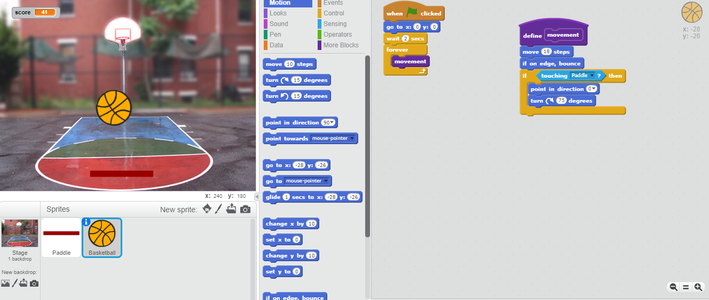

Biography
..............
..............
Likes
-I like to learn new things
-I like to spend time with my family
-I like photography
-I like to code

In Girls Who Code we created our own version of Paddle Ball using Scratch, we used tools we learned in class. In my case, I used a function to make the ball move forever.
In Girls Who Code we converted pictures into Obamicon pictures. We used Python to convert apicture of Ada Lovelace into an Obamicon using RGB.
In Girls Who Code we learned how to make shapes using Python. I added user input to my code, that way the user can print more than one shape.
In Girks Who Code we learned about circcuits and how to program the arduino robot to do simple commands. In the end we managed to make the arduino robot detect when it bumos into an obstacle, and move away from the obstacle.